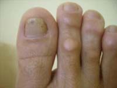

Calos e Calosidades
É um dos problemas mais comuns na área da podologia . São formados pela compressão e/ou atrito do calçado em uma área proeminente dos pés. De acordo com a sua localização, recebem uma nomenclatura específica: Calo duro – localiza-se sobre as articulações interfalangeanas nos dedos em garra ou na borda dorso-lateral do quinto artelho.
Calo Mole (interdigital)
Encontram-se em áreas protuberantes entre os artelhos e recebem o nome de calo mole pelo alto nível de umidade encontrado nessas áreas.
Calosidades
São bastante freqüentes nas áreas de mais atrito na região plantar. Quando localizadas na extremidade dos calcanhares, podem apresentar fissuras, que se não forem bem conduzidas, serão portas de entrada de infecção.
